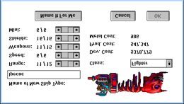

Les vaisseaux
Les vaisseaux servent à explorer de nouvelles étoiles, à défendre vos colonies et à coloniser de nouvelles planètes. Il existe plusieurs sortes de vaisseaux, et vous pouvez créer les vôtres.
Les vaisseaux de Spaceward Ho! sont incroyablement gros et chers. Par exemple, votre premier Transport absorbera presque un tiers des ressources totales de votre planète, plus toute la production industrielle de la planète pendant trente ans. C’est un gros bateau.
Construire des vaisseaux
Vous pouvez construire des vaisseaux à n’importe laquelle de vos colonies. Pour cela, cliquez sur la planète où vous voulez construire des vaisseaux et choisissez « Construire des vaisseaux » dans le menu « Vaisseaux », ou bien double-cliquez simplement sur la planète. Une grande boîte de dialogue s’ouvre. À droite se trouve la liste de tous les types de vaisseaux disponibles. À gauche se trouve la liste des vaisseaux en file d’attente. Quand vous cliquez sur le type de vaisseau que vous voulez construire, il s’ajoute à la liste de gauche. Pour retirer un vaisseau de la file d’attente, cliquez simplement dessus et il disparaît.
Une fois que vous avez mis des vaisseaux en file d’attente à une planète, n’oubliez pas de dépenser de l’argent sur la planète et d’en consacrer une partie à la construction de vaisseaux. Sinon, aucun vaisseau ne sera construit. Si, au bout de trois tours, un vaisseau n’est achevé qu’à 5 %, vous voudrez probablement dépenser davantage pour lui, sans quoi il sera obsolète avant d’être terminé.
Déplacer des vaisseaux
Pour déplacer une flotte, cliquez et faites glisser depuis la planète où elle se trouve jusqu’à l’endroit où vous voulez qu’elle aille. Si elle peut y arriver, vous verrez une flèche qui suit la route que prendra votre flotte. Quand vous relâchez la souris, vous entendrez un « Hyahh ! » qui vous indique que le cap est fixé. Quand vous terminez le tour, le vaisseau part en voyage.
Si la flotte ne peut pas atteindre l’étoile vers laquelle vous l’avez fait glisser, le trajet sera montré par une ligne grise en pointillés. Si la flotte a assez de carburant pour aller à l’étoile choisie et en revenir, le trajet sera une flèche à double pointe.
Pour qu’une flotte reste immobile, ou pour annuler son déplacement, cliquez sur la planète où se trouve la flotte et maintenez le clic une seconde. Quand vous le faites correctement, vous entendrez un « Whoa ! » en relâchant la souris.
Si vous avez plus d’une flotte à une planète, vous pouvez choisir la flotte à déplacer en cliquant sur son nom dans la fenêtre de la planète. Quand une flotte a une destination et prévoit de partir à la fin du tour, son nom apparaît en gras pour vous le signaler. Appuyer sur la touche TAB sélectionne automatiquement la flotte suivante dans la liste des flottes à cette planète.
Une flotte se ravitaille automatiquement chaque fois qu’elle va sur une planète qui vous appartient. Si vos vaisseaux sont bloqués et n’ont pas assez de carburant pour repartir, vous pouvez envoyer un Transport sur cette planète, la coloniser pendant un tour, puis faire partir tout le monde.
La trajectoire d’une flotte ne peut pas être changée entre deux planètes : dans l’hyperespace, on ne peut pas faire demi-tour.
Organiser les flottes
Il arrive que vous vouliez diviser une flotte en plusieurs morceaux ou réunir plusieurs flottes. Pour cela, choisissez « Organiser flottes » dans le menu « Vaisseaux ». Puis faites glisser les vaisseaux jusqu’à ce qu’ils soient répartis comme vous le voulez. Désolé, une flotte ne peut contenir que des vaisseaux du même type (pour réduire la taille des fichiers). Si vous décidez d’organiser des flottes à une étoile où stationne plus d’un type de vaisseau, veillez à sélectionner d’abord la flotte du type que vous voulez organiser.
Recycler des flottes et des vaisseaux
À mesure que la partie avance, vous constaterez que le métal se fait rare et que vos vaisseaux obsolètes ne servent presque plus à rien. Vous voudrez peut-être vous débarrasser de certains de vos plus vieux vaisseaux. Vous pouvez récupérer 75 % du métal des vaisseaux qui se trouvent à l’une de vos colonies, soit en recyclant des flottes (choisissez « Recycler la flotte actuelle » dans le menu « Vaisseaux »), soit en recyclant tout un type de vaisseau (cliquez sur « Recycler ce type » pour un type précis dans la boîte de dialogue « Liste des types de vaisseaux »).
Quand vous marquez un type de vaisseau ou une flotte pour le recyclage, le recyclage n’a pas lieu avant la fin du tour. Si vous avez des regrets d’ici là, vous pouvez simplement décocher la case « Recycler ce type », ou choisir « Ne pas recycler la flotte » dans le menu « Vaisseaux ».
Si vous voulez recycler seulement une partie d’une flotte, utilisez la boîte de dialogue « Organiser flottes » pour diviser la flotte entre ce que vous voulez garder et ce que vous voulez recycler.
Quand vous recyclez des vaisseaux qui se trouvent au-dessus d’une colonie, le métal passe instantanément dans votre réserve globale et vous pouvez l’utiliser tout de suite. Si vous ne possédez pas la planète au-dessus de laquelle se trouvent les vaisseaux, le métal tombe sur la planète. La prochaine personne qui la colonisera pourra alors extraire le métal de vos vaisseaux recyclés.
Concevoir vos propres vaisseaux

C’est sans doute la partie la plus cool du jeu. À mesure que votre technologie progresse, vous voudrez commencer à construire des vaisseaux de plus en plus avancés grâce à ces nouvelles technologies. C’est facile. Choisissez simplement « Créer un nouveau type de vaisseau » dans le menu « Vaisseaux ». La boîte de dialogue « Conception de vaisseau » s’affiche. Il suffit de déplacer les curseurs pour régler les qualités du nouveau vaisseau. L’extrémité droite du curseur correspond toujours à votre niveau de technologie actuel.
Coût de développement
Construire le premier vaisseau d’un nouveau type coûte plus cher que de construire chacun des suivants : il faut du travail pour éliminer les défauts et faire les essais. C’est particulièrement vrai des vaisseaux à forte miniaturisation. Gardez simplement à l’esprit que le coût de développement est unique et lié à chaque nouveau type de vaisseau.
Types de vaisseaux
Il y a quatre grandes classes de vaisseaux : les Transports, les Satellites, les Éclaireurs et les Croiseurs.
Transports
Les Transports emmènent des gens et colonisent de nouvelles étoiles pour vous. Ils sont incroyablement chers, en argent comme en métal. Ils coûtent si cher que vous n’en construirez que quelques-uns. Cela, et le fait que la miniaturisation ne leur apporte pas grand-chose, signifie que vous ne voudrez probablement utiliser aucune Mini sur vos Transports. Les Transports sont aussi la première chose sur laquelle l’ennemi tirera dans une bataille, il faudra donc aussi être prudent avec eux.
Satellites
Les Satellites sont des vaisseaux sans moteurs. Cela signifie que leur Distance est nulle. Ce sont un moyen bon marché et efficace de défendre vos planètes contre les attaques ennemies. Malheureusement, ils ne peuvent pas bouger ; ils ne peuvent défendre que la planète où ils ont été construits.
Quand une planète a des Satellites, elle est entourée d’un anneau sur la carte des étoiles.
Éclaireurs et Croiseurs
Les Éclaireurs et les Croiseurs sont vos vaisseaux de base. La distinction entre les deux est un compromis entre Distance et armement. Les Éclaireurs peuvent avoir une Distance supérieure de deux unités à votre technologie de Distance. Malheureusement, leur technologie maximale d’Armes et de Boucliers est inférieure d’un niveau à vos niveaux actuels. Cela fait des Éclaireurs des vaisseaux idéaux pour l’exploration, mais pas très bons au combat.
Spaceward Ho! met automatiquement chaque Éclaireur construit dans sa propre flotte, pour qu’il puisse partir explorer de façon indépendante. Les Croiseurs rejoignent automatiquement les flottes du même type de vaisseau aux étoiles où ils sont construits.
Traduction française du remake, non officielle, du manuel de Delta Tao. La page en anglais (en anglais).